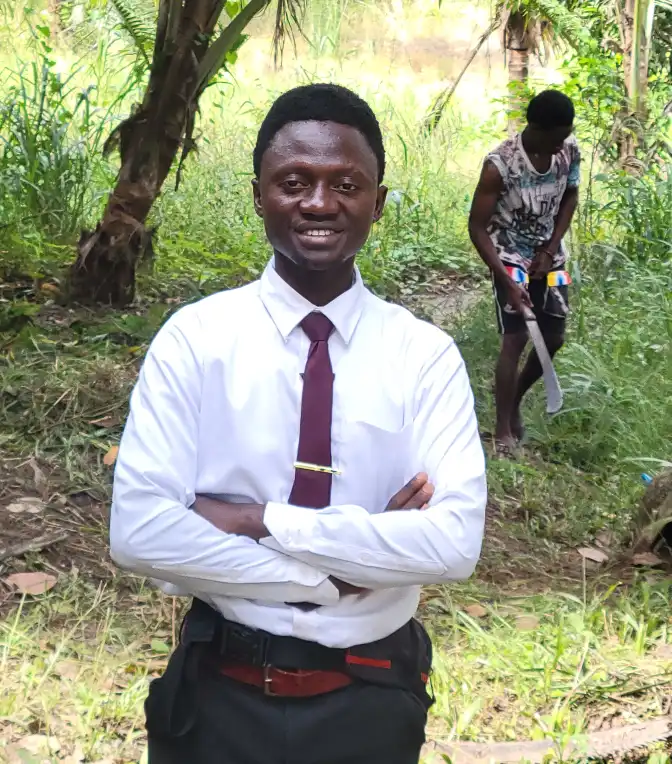

Home
About Me
I am a passionate web development student at BYU_Idaho through BYU-Pathway. To increase my skills, I enjoy exploring new technologies and staying up-to-date with industry trends. I am also currently enrolled in a Coursera IT Support course. I currently serve as a temple facility assistant at the Freetown Sierra Leone Temple. Besides my love for technology, I also love football. I am a Real Madrid fan and I mostly use my leisure time to read. I am an only son and the eldest of 4 children. I love riding motor bike whenever I can for commercial purposes. I also love comedy. you might say I'm a comedian cause being around me is more like being in a comedy show. I give away laughter for free.
Student Photo
